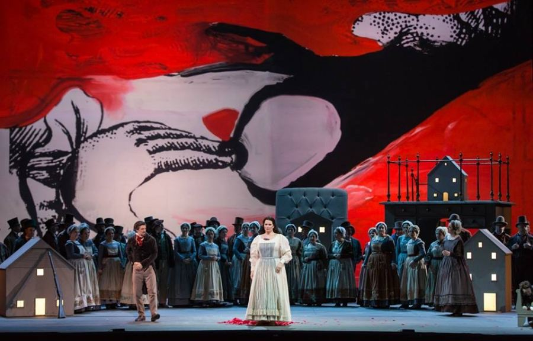
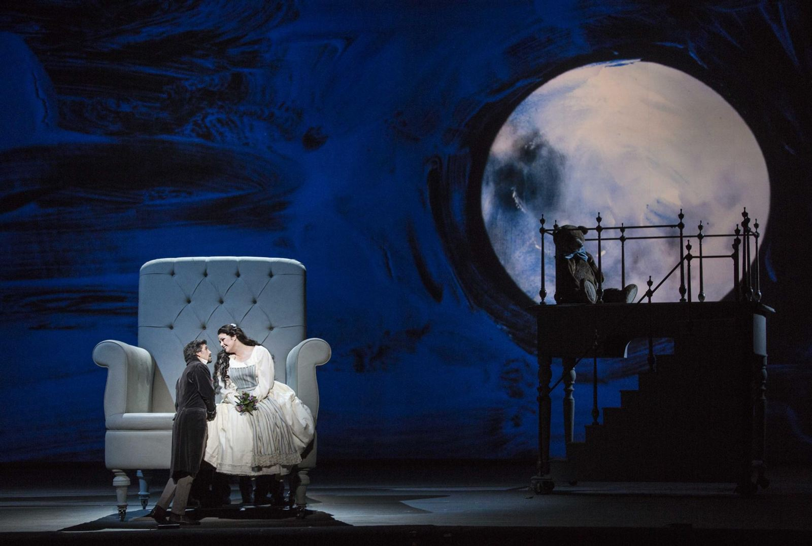
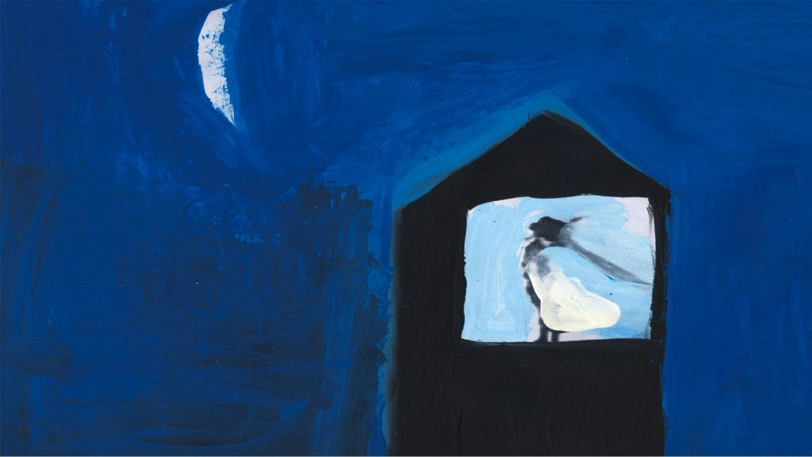
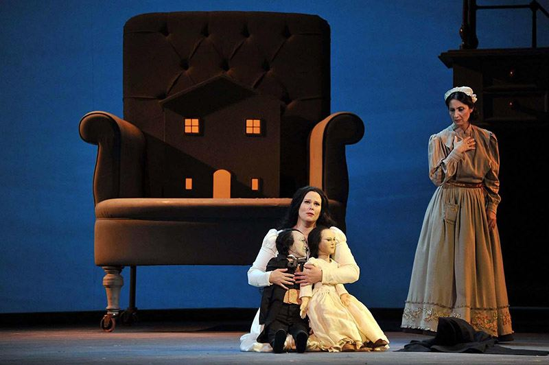
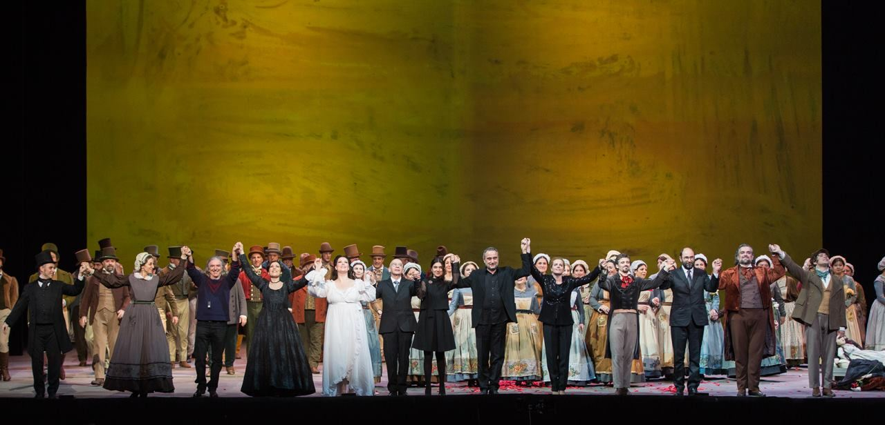
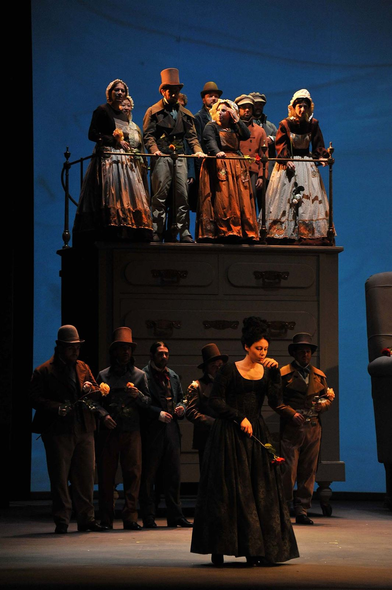
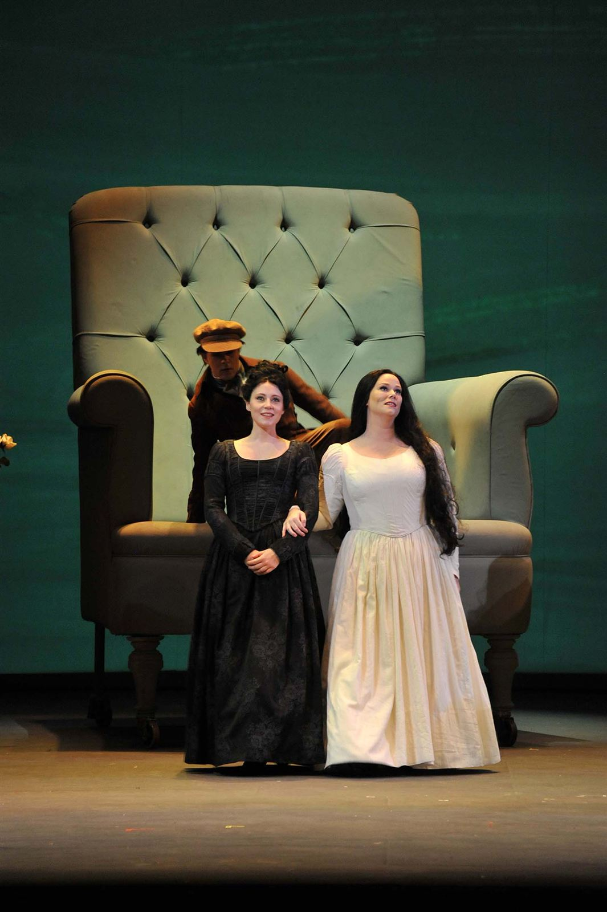

Cristian Taraborrelli signs the set design for La Sonnambula, the new production directed by Giorgio Barberio Corsetti at the Teatro dell’Opera di Roma. Through giant-scale objects that reproduce the classic room of a pure-hearted girl, the design evokes the effect of a doll’s house, immersed in the vivid colours of art video flowing across the backdrop.
Cristian Taraborrelli firma la scenografia per La Sonnambula, la nuova regia di Giorgio Barberio Corsetti al Teatro dell’Opera di Roma. Attraverso oggetti in dimensioni gigantesche che riproducono la classica stanza di una ragazza dal cuore puro, la scenografia rimanda l’effetto della casa di bambola, poi immersa nei colori vivissimi del video d’arte che scorre sul fondo.
Cristian Taraborrelli signe la scénographie de La Sonnambula, la nouvelle mise en scène de Giorgio Barberio Corsetti au Teatro dell’Opera di Roma. À travers des objets aux dimensions géantes reproduisant la chambre classique d’une jeune fille au cœur pur, la scénographie évoque l’effet d’une maison de poupée, plongée dans les couleurs vives d’une vidéo d’art qui défile en arrière-plan.
Gallery








Video
Stampa
«Romantica infine come poche questa Sonnambula, e qui il carattere è esaltato dalla scenografia di Cristian Taraborrelli, che attraverso oggetti in dimensioni gigantesche che riproducono la classica stanza di una ragazza dal cuore puro, rimanda l’effetto della casa di bambola, poi immersa nei colori vivissimi del video d’arte che scorre sul fondo.» “Romantic like few others, this Sonnambula — and here the character is heightened by Cristian Taraborrelli’s set design, which through giant-scale objects reproducing the classic room of a pure-hearted girl, evokes the effect of a doll’s house, then immersed in the vivid colours of art video flowing across the backdrop.” «Romantique comme peu d’autres, cette Sonnambula — et ici le caractère est exalté par la scénographie de Cristian Taraborrelli, qui à travers des objets aux dimensions géantes reproduisant la chambre classique d’une jeune fille au cœur pur, évoque l’effet d’une maison de poupée, puis immergée dans les couleurs vives de la vidéo d’art qui défile en arrière-plan.»
Tags